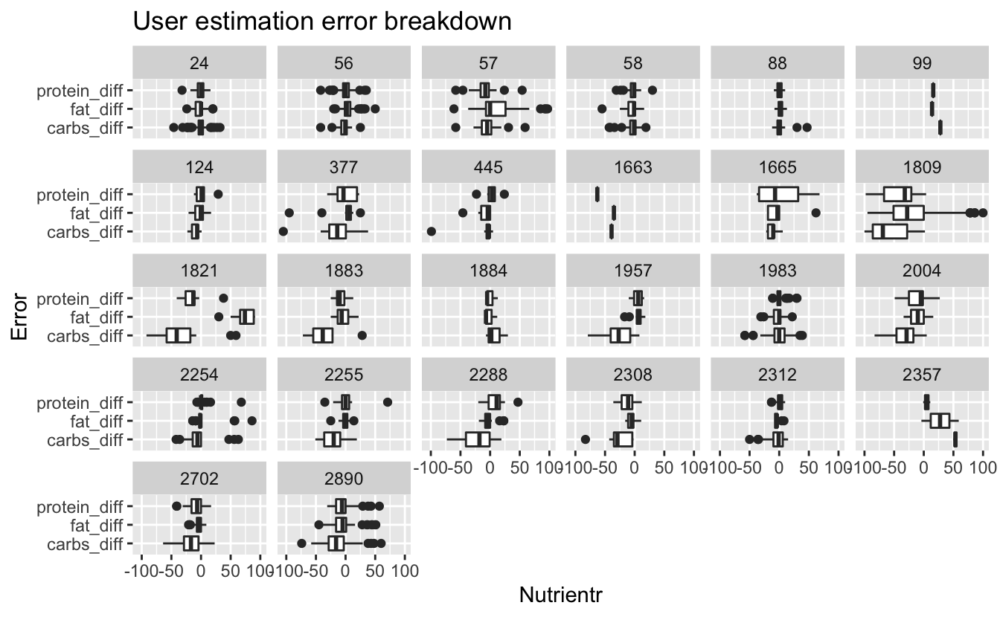
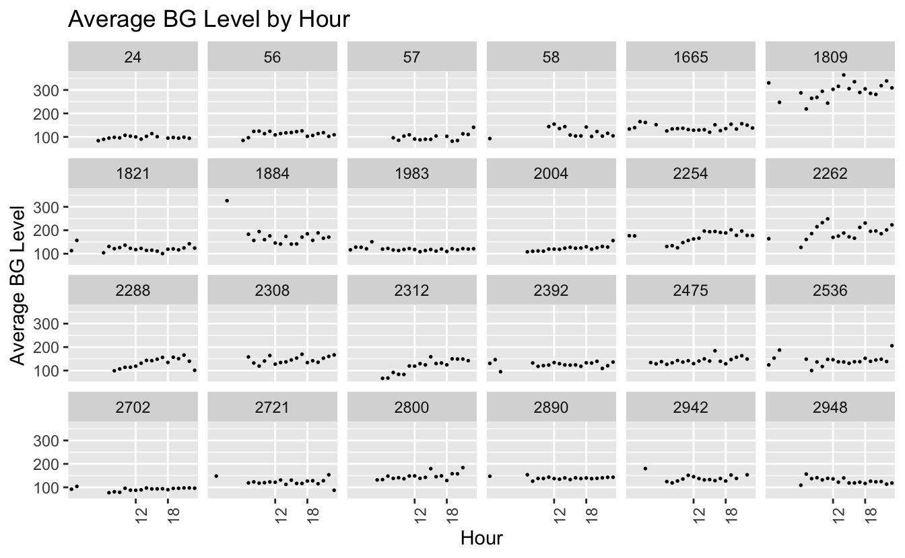
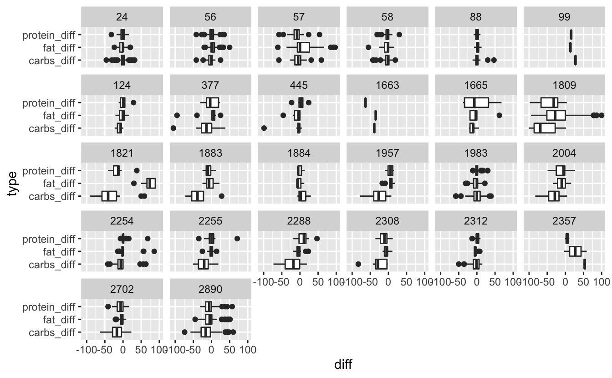

Chapter 8 Appendix



Have the ability of users to estimate nutrients change overtime with the use of the app?


8.1 Sleep
Questions: * does the amount of sleep impact the first BG reading in the day (pre-breakfast, important!) (the very first pre-breakfst BG reading is considered fasting and is a true-ish representation of glycemic control (how bad is your diabetis)). * Does amount (or quality of sleep) have an impoact on pre-breakfast BG (<- new measure). * Urban mith - the quality/amount of sleep may change how people respond to meals, e.g. for the same nutritional breakdown of a meal BG_impoact will be different.
- Fat and protein mediate the impact of carbohidrate. How to show this (focus on the visualization, data may be lacking the signal)